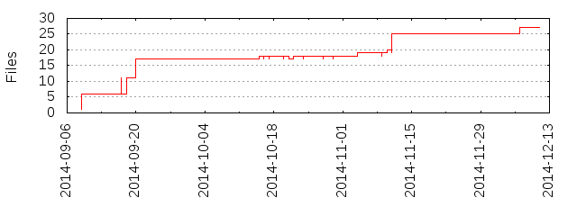

Files
General
Activity
Authors
Files
Lines
Tags
Total files
27
Total lines
3380
Average file size
4870.04 bytes
File count by date

Extensions
Extension
Files (%)
Lines (%)
Lines/file
3 (11.11%)
100 (2.96%)
33
md
1 (3.70%)
1 (0.03%)
1
py
19 (70.37%)
3098 (91.66%)
163
sh
1 (3.70%)
4 (0.12%)
4
yaml
2 (7.41%)
135 (3.99%)
67
yml
1 (3.70%)
36 (1.07%)
36